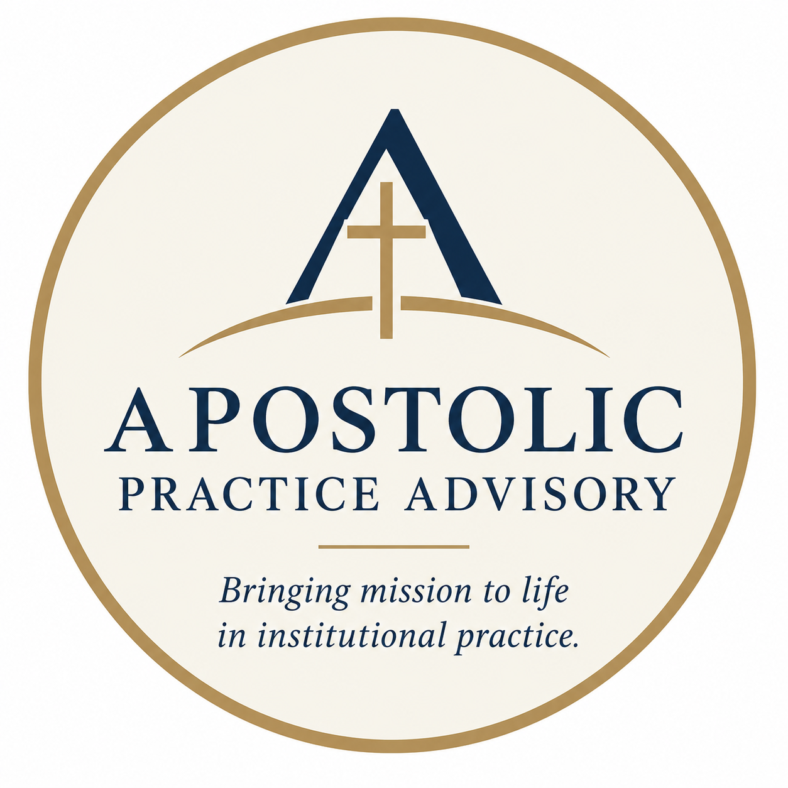

01 / STRATEGY
Mission Integration & Strategy
Connect mission priorities with institutional strategy, divisional plans, governance, measurable goals, and accountability.

Helping Catholic and Jesuit institutions translate their identity, values, and aspirations into the structures, decisions, and everyday practices that shape institutional life.
Explore advisory services Start a conversationA strong mission is visible in how an institution leads, hires, forms its people, allocates resources, makes decisions, and responds to the needs of its community. Apostolic Practice Advisory helps leaders connect their deepest commitments with the practical work of institutional change.
Grounded in Catholic educational leadership, Jesuit mission, and collaborative organizational practice, this work helps institutions move from aspiration to implementation without losing sight of the people at the heart of their mission.
Practical, collaborative support for leaders navigating institutional questions that are strategic, organizational, and deeply human.
Connect mission priorities with institutional strategy, divisional plans, governance, measurable goals, and accountability.
Design formation experiences for senior leaders, faculty, staff, trustees, and emerging leaders that connect Catholic identity with daily leadership decisions.
Help teams navigate change, clarify responsibilities, strengthen collaboration, and build structures that support a shared mission.
Facilitate stakeholder listening, mission assessments, and collaborative reflection that turn diverse perspectives into clear institutional priorities.
Strengthen the ways institutions recruit, onboard, evaluate, and form people in alignment with their Catholic identity and mission.
Translate plans into action steps, ownership, timelines, and reporting practices that help leaders understand progress and sustain momentum.
Every institution has its own mission, context, and priorities. Engagements are tailored to institutional needs, with a focus on meaningful outcomes and sustainable progress.
Starting at $6,500
A focused four-week engagement combining document review, stakeholder listening, institutional assessment, strategic recommendations, and a 90-day implementation roadmap.
Starting at $12,000
Customized engagements supporting deeper institutional alignment, organizational development, leadership collaboration, and implementation planning.
Custom proposals
Tailored leadership formation, workshops, executive advising, and ongoing mission integration support.
Final fees are determined by institutional size, project scope, duration, and specific needs. Travel and other project-specific expenses may be additional.
Effective mission integration is neither a compliance exercise nor a slogan. It requires thoughtful listening, honest assessment, practical structures, and sustained attention to institutional life.
Listen before prescribing.
Understand the people, history, strengths, and challenges that
shape each institution.
Connect values to decisions.
Make mission visible in leadership, human resources, planning,
resource allocation, and community life.
Build with people, not around them.
Create shared ownership and clear accountability while preserving
the trust essential to meaningful change.
Measure what matters.
Establish practical indicators and regular opportunities for
reflection, learning, and adjustment.
With nearly two decades of experience in educational leadership, this advisory practice draws on work across student life, student services, academic affairs, enrollment, budgets, equity and inclusion, research, teaching, and mission integration.
Experience includes leading mission assessment and planning, facilitating institution-wide listening, supporting formation across campus communities, and helping leaders connect strategic commitments with implementation.
The work is informed by the Catholic intellectual tradition, Ignatian spirituality, Catholic Social Teaching, and a commitment to building institutions where people can participate meaningfully in a shared mission.
Catholic colleges and universities
Jesuit educational institutions and ministries
Catholic schools and educational networks
Diocesan and church-affiliated organizations
Catholic healthcare and mission-driven nonprofits
Leadership teams navigating organizational change
Whether you are beginning a mission assessment, developing a leadership formation program, or working through a complex organizational challenge, let's explore how to move the work forward.
Tell us a little about your institution and how we might help.